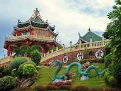
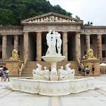

Cebu Taoist Temple
 Temple of Leah
 10,000 Roses of Cebu
The temple was built by Cebu's substantial Chinese Filipino community in 1972. At an elevation of 110 metres (360 ft) above sea level, the temple is a towering, multi-tiered, multi-hued attraction accessible by three separate winding routes. Unlike the neighboring Phu Sian Temple, the Taoist temple is open to worshipers and non-worshipers alike. A ritual among devotees is where one prays to the gods to grant one's wish. The ritual includes washing hands, going inside the chapel barefoot and dropping two blocks of wood. If the wood blocks are both face up then one could make a wish. If not then it is not yet the time for one's wish to be granted and one has to come to the temple some other time.
The Temple of Leah is one of the top cultural and historical sites worth adding to your itinerary in Cebu City. Many call the temple the “Taj Mahal of Cebu' because it is also a mausoleum for a great love that never ends, even after death. In the last decade, it has become one of the most popular attractions in Cebu. Teodorico Soriano Adarna had the Temple of Leah built for his late wife, Leah Albino-Adarna. Their marriage lasted for more than five decades. Teodorico and Leah are the grandparents of Ellen Adarna, a famous actress in the Philippines.

10000 Roses Cebu is located in Cordova on the southwest side of Mactan Island, not far from the international airport. The best way to beat that chaotic Lapu-Lapu City traffic is to rent a scooter for the day. If youre not comfortable driving in the city you can opt for a taxi, grab, public transport or hire a driver. Upon entering 10000 Roses Café & More youll be greeted by a sea of white roses set against a backdrop of the Mactan Channel and mainland Cebu in the distance. The entire place is Instagrammable, which is what made it one of the most popular Cebu tourist spots to begin with.